This page describes the implementation of signal generation within the feb_2026_strategy. It focuses on how the system translates high-level LLM forecasts into actionable trade signals using a graph-based data resolution pattern, sentiment mapping, and strict filtering rules.
The core of the strategy is the translation of natural language sentiment labels produced by the LLM into discrete trading positions. This is governed by the POSITION_LABEL_MAP constant.
| LLM Sentiment | Trade Position | Strategy Action |
|---|---|---|
bullish |
long |
Open Buy position |
bearish |
short |
Open Sell position |
neutral |
wait |
No action / Ignore |
sideways |
wait |
No action / Ignore |
This mapping ensures that only clear directional biases result in market exposure. The wait status acts as a safety buffer for ambiguous market conditions.
The strategy utilizes a graph-based pattern from @backtest-kit/graph to manage data dependencies. This separates the fetching of the forecast from the logic that determines the position.
forecastSource: A sourceNode that wraps the forecast function. It includes a Cache.file layer with a 1-day interval to prevent redundant LLM calls during backtesting.positionOutput: An outputNode that depends on forecastSource. It applies the POSITION_LABEL_MAP to the sentiment returned by the LLM.The getSignal function is the entry point for the strategy logic, registered via addStrategySchema. It follows a sequential validation pipeline before emitting a signal.
To prevent over-trading on the same news cycle, the strategy implements a NEWS_WINDOW of 24 hours (1440 minutes).
getMinutesSinceLatestSignalCreated checks the time elapsed since the last signal for the specific symbol.NEWS_WINDOW, the strategy returns null, effectively enforcing a cooldown period.The strategy resolves the graph nodes to obtain the latest AI insights.
forecast.confidence is marked as not_reliable, the signal is discarded.neutral or sideways sentiments provide a secondary layer of protection against non-directional signals.If all filters pass, a signal object is returned.
Position.moonbag to set the position side and a hard stop-loss (defined by HARD_STOP at 3.0%).note is attached, containing the LLM's reasoning and a deep link to the news dump for auditability.The following diagram illustrates the transition from the LLM's natural language output to the structured signal used by the execution engine.
Title: Signal Generation Logic Flow

The strategy does not just open positions; it actively monitors them for sentiment reversals via listenActivePing. This creates a dynamic link between the LLM's evolving view of the market and open trades.
forecastSource and positionOutput.data.position of the open trade.long to short or wait), and the new forecast is reliable, the strategy calls commitClosePending to exit the position immediately.Title: Code Entities and State Transitions
